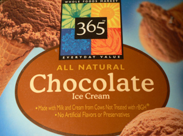

Chocolate ice cream returns to Whole Foods!
I think that Mom and I can take full credit for the triumphant return of chocolate ice cream to Whole Foods Market.

Yay! Whole Foods house-brand chocolate is by far the best value going in ice cream. It’s delicious, creamy, and not too sweet, and it smells of fresh brownies. $3.99 gets you a half gallon.
Comments
While I’ve never before really had a penchant for chocolate ice cream, you have of course now awakenened an obsession to try this stuff… So, thanks! Thanks a lot.
;)
I completely agree. This is such an underestimated product (I wrote about it too!) I found it by looking for a lower-sugar ice cream – I find that most ice creams are just too sweet, and I’m not quite ready for the Frankenstein fake suger stuff.
Add a comment